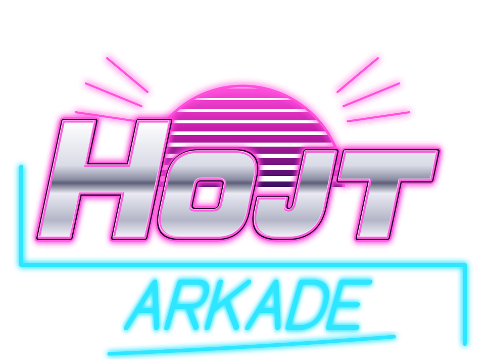

KANONEN
Indstil vinkel og krudt, og skyd på skift med computeren. Hold øje med vinden, som skifter hver tur. Nedslagene sprænger kratere i landskabet. Vinder du, venter en ny og lidt dygtigere modstander. Der er ingen tid – tænk dig om.

Indstil vinkel og krudt, og skyd på skift med computeren. Hold øje med vinden, som skifter hver tur. Nedslagene sprænger kratere i landskabet. Vinder du, venter en ny og lidt dygtigere modstander. Der er ingen tid – tænk dig om.
Hojt Arkade er udviklet af Jon Leismann Engsager, Hojt Design. Jon er IT- og IKT-konsulent i det specialiserede område og laver blandt andet gratis spil til voksne, der bruger øjenstyring.
Kanonen: 10 point for hvert skadepoint på modstanderen, 500 point gange modstanderens nummer for hver sejr og 100 point i bonus for hvert skud under otte i en vundet kamp. Du har 3 store bomber pr. kamp.
Koden er åben og frit tilgængelig under MIT-licensen, så alle kan bruge den og bygge videre på den.
Din kanon er ødelagt.
0 sejre
Brug kun dwell her, hvis dit øjenstyringssystem ikke selv klikker. Har du dwell-klik i fx Tobii, så lad indstillingen være slået fra. Bliver blikket på en plus- eller minusknap, gentages den. Tastaturet virker altid: pil op og ned ændrer vinklen, pil højre og venstre ændrer krudtet (hold Skift for trin på 5), S eller Enter skyder, B skifter mellem granat og bombe, og Esc eller P giver pause.